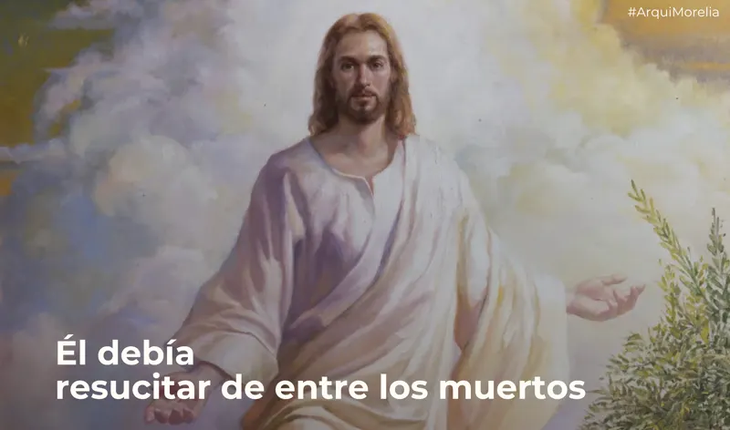
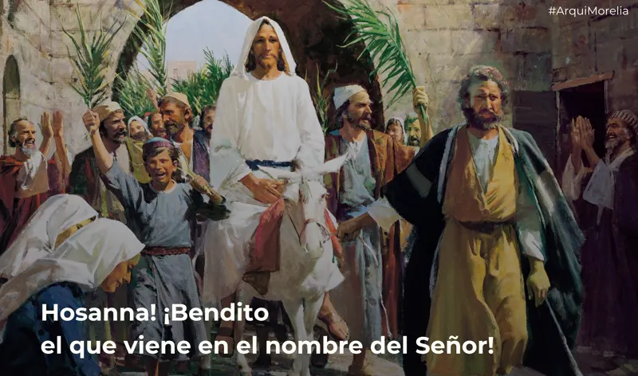

Queridos hermanos, hoy el evangelio nos presenta a Santo Tomás, aquel Apóstol que dudó de la resurrección del Señor, pero en el fondo todos tenemos algo de Santo Tomás, a veces, cuando nos ha llegado la desilusión, el dolor, llegamos a dudar del Señor, cuando los problemas nos arrecian y tal vez estamos como Tomás, si no veo la señal en sus manos y si no meto mis dedos en sus llagas, no creeré, muchas veces nos hemos puesto también en ese plan de pedir pruebas, de pedir signos para creer y Jesús pudo habérsele aparecido a Tomás en su casa, en el camino, pero quiso hacerlo delante de la comunidad para enseñarle que solo dentro de la comunidad podemos encontrar al Señor, orando con ellos, conviviendo, porque también este es otro aspecto de nuestra vida cristiana, quiero encontrar al Señor solo en mi corazón, mientras que Dios nos ha dado una comunidad, Dios nos ha pedido que seamos de ese grupo, verdad, de esa pequeña comunidad de discípulos que es nuestra parroquia y donde nosotros vamos para escuchar la palabra de Dios, para alimentarnos del cuerpo del Señor.
Pero el Señor también tiene una alabanza para aquellos que creen sin haber visto. ¿Cuántas personas confían plenamente en Dios? ¿Cuántas personas nos dan testimonio de una fe inquebrantable?
De que en los momentos difíciles parece que se cae la vida a pedazos, pero que nos dan muestra de creer en el Señor.
Señor Jesús, te pido perdón por tantas veces que he dudado de tu misericordia y de tu amor, cuando te he puesto a prueba pidiéndote una señal para mi vida. Concédeme Señor la fe de María, concédeme Señor la fortaleza de aquellos discípulos que permanecieron fieles a ti en su camino, danos la alegría de tu resurrección y concédenos vivir en la paz, esa paz que nos ofreces y que podamos nosotros llevar esa buena nueva, esa buena noticia de tu presencia a nuestros hermanos.
+José Armando Álvarez Cano,
Arzobispo de Morelia
Te puede interesar

Homilía III Domingo de Pascua - Ciclo A
Hoy hemos escuchado uno de los pasajes más bellos del nuevo testamento, el pasaje de los peregrinos de Emaús, y ellos tenían algo parecido: el dolor, la decepción, la tristeza les…

Homilía Domingo de la Resurrección del Señor - Ciclo A
Queridos hermanos, estamos celebrando la resurrección del Señor y sin duda este acontecimiento vino a abrir los ojos de los discípulos, a que cada cosa que ellos vivieron con él…

Homilía Domingo de Ramos - Ciclo A
Este pasaje que hemos escuchado del evangelio de San Mateo, narra la entrada triunfal de Jesús en Jerusalén, evento que marca el inicio oficial de nuestra Semana Santa. El…